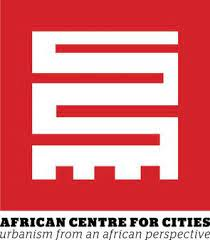
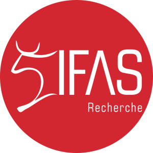

Call for Applications
The International Masterclass on “Digital Technologies in the African city” will take place from Monday, April 3rd to Tuesday, April 12th 2023, at the University of Cape Town.
The purpose of the masterclass is to bring together graduate students enrolled in Nigeria, France and South Africa, and interested in researching how digital technologies transform cities within and beyond the context of Cape Town, one of Africa’s major tech hubs.
The instructional program involves guest lectures, collective workshops and site visits, and participant-led research projects. The panel of guest speakers includes leading voices from academia and from the local tech industry.
From data centres to smartphone apps, tech firms to platform workers, finance to mobilities, we will collectively question, from the perspective of urban studies and social sciences, how digital technologies reshape urban spaces, transform economies and affect daily livelihoods.
About twenty participants will be invited, and participants are expected to fully attend and participate in the entire program.
This event is organised by the Department of Geography from the Ecole Normale Supérieure, the African Centre for Cities at the University of Cape Town, with the financial support of the PSL Translitterae program and the French Research Institute of South Africa, and the assistance of IFRA-Nigeria.
The co-organizers of the masterclass are Pauline Guinard (ENS) and Julien Migozzi (Oxford University).
Applications for UCT students are open. Please consult the section Applying. Application materials are due Sunday, March 12th, 2023.
 